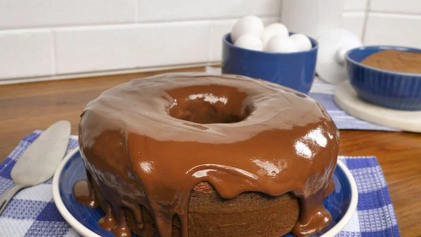
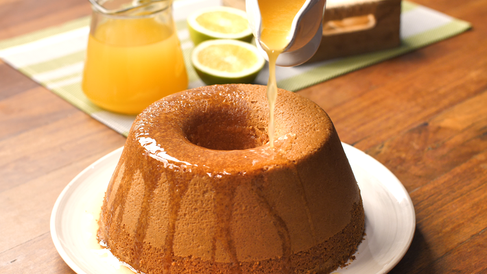

Bolo Simples
- 2 xícaras (chá) de açúcar
- 3 xícaras (chá) de farinha de trigo
- 4 colheres (sopa) de margarina
- 3 ovos
- 1 e 1/2 xícara (chá) de leite
- 1 colher (sopa) bem cheia de fermento em pó
- Bata as claras em neve e reserve
- Misture as gemas, a margarina e o açúcar até obter uma massa homogênea.
- Acrescente o leite e a farinha de trigo aos poucos, sem parar de bater.
- Por último, adicione as claras em neve e o fermento.
- Despeje a massa em uma forma grande de furo central untada e enfarinhada.
- Asse em forno médio 180 °C, preaquecido, por aproximadamente 40 minutos ou ao furar o bolo com um garfo, este saia limpo.

Bolo de Chocolate
- 4 ovos
- 4 colheres (sopa) de chocolate em pó
- 2 colheres (sopa) de manteiga
- 3 xícaras (chá) de farinha de trigo
- 2 xícaras (chá) de açúcar
- 2 colheres (sopa) de fermento
- 1 xícara (chá) de leite
- Em um liquidificador adicione os ovos, o chocolate em pó, a manteiga, a farinha de trigo, o açúcar e o leite, depois bata por 5 minutos.
- Adicione o fermento e misture com uma espátula delicadamente.
- Em uma forma untada, despeje a massa e asse em forno médio (180 ºC) preaquecido por cerca de 40 minutos. Não se esqueça de usar uma forma alta para essa receita: como leva duas colheres de fermento, ela cresce bastante! Outra solução pode ser colocar apenas uma colher de fermento e manter a sua receita em uma forma pequena.

Bolo de Laranja
- 4 ovos grandes
- suco de 2 laranjas
- 1 xícara (chá) de óleo
- 2 xícaras de farinha de trigo bem cheias
- 1 xícara de açúcar bem cheia
- 1 colher (sopa) de fermento bem cheia
- Bata no liquidificador os ovos, o suco de laranja e o óleo.
- Em seguida adicione o trigo e o açúcar e misture bem até obter uma mistura homogênea.
- Adicione por último o fermento, mexa por mais alguns minutos e disponha a massa em uma forma com furo central untada e enfarinhada.
- Asse em forno médio (180° C), preaquecido, por 40 minutos e está pronto.